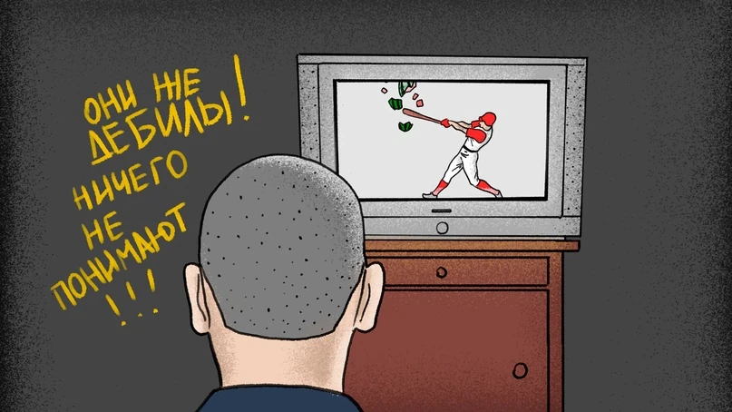

Диссидентство, ватничество и «Каспийский Груз» — почему в тюрьмах лучше пореже показывать новости
Сто двадцать человек, держа шапки на коленях, вперили взгляд в большой экран.
«Во времена Второй мировой войны генеральный штаб фашистской Германии уделял огромную роль не только истреблению еврейской нации, но и уничтожению узлов связи, чтобы СССР и его союзники испытывали затруднения в…» — звучало из больших колонок.

Когда я впервые попал в помещение лагерного «клуба», мне показалось, будто я перенесся лет на 40 назад. Сразу вспомнился фильм «Гудбай, Ленин», где немало внимания досталось комнате, обставленной в советской эстетике. Для человека, который безвылазно сидел в ней, Союз так и не распался. Подобной комнатой оказался «клуб».
«Англичане не оставляли без ответа немецкие бомбардировки, уничтожая пути сообщения, отделения телеграфа», — говорил закадровый голос, пока на экране демо��стрировались черно-белые кадры военной хроники.
На стенах были нарисованы классические совковые образы, в моей голове всегда странно переплетающиеся с образами религиозными. Только свои «храмы» товарищи украшали не капеллами, а космонавтами, пионерами, какими-то спутниками, ракетами и сталинскими высотками.
Нарисованные люди непременно улыбались, всем свои видом показывая, как хорошо и ладно строится коммунизм, что совсем не за горами светлое будущее и всеобщее счастье. Было грустно смотреть на эти лица, в давным давно нарисованные глаза. Эти люди не знают, что коммунизм возьмет и кончится, оставив тысячи граждан идеологическими сиротами.
«Что общего между этими событиями, спросит пытливый телезритель? Эксперты утверждают, что общее есть. И это СВЯЗЬ. Без СВЯЗИ нет войны. Но что еще немаловажно — СВЯЗЬ нужно прослеживать. Например, связь прибытия на Украину заместителя министра обороны США и начало так называемой контртеррористической операции в мирном Донбассе...»
В зале заухало, загромыхало. Кто-то курил. Неподалеку от меня послышались хруст и шелест оголяемой шоколадки. Мучительно захотелось съесть что-нибудь сладкое. Я сразу проследил связь (не благодаря демонстрируемой агитке) моих мыслей и крика одного из зеков:
«Политику не хаваем!»
На сцену поднялся какой-то мент, забрал часть изображения проектора на себя и принялся, судя по жестам, говорить что-то успокаивающее (среди общего гвалта слов было не разобрать). Я решил воспользоваться замешательством вокруг и тактично свалить.
Еще один мент, стоявший в дверях, пошел к закурившим зекам — требовать, чтобы они потушили сигареты. А я сделал лицо поуверенней и благополучно вышел.
На зоне пришло понимание: чем непосредственнее твое поведение, тем меньше вероятность, что до тебя доебутся сотрудники администрации.
К слову, зеки, «хавающие политику», все же были. Правда, большинство из них работали на промышленной зоне и днем отсутствовали. Но каждый вечер они собирались напротив телевизора с включенным федеральным каналом и сидели, приоткрыв рты, как на карикатурах про зомбоящик.
Среди них был один человек, о котором я расскажу подробнее. У него было детское погоняло Фунтик, неизвестно почему за ним закрепившееся. Ему около 45 лет, и с самого начала нашего знакомства от него так и несло худшей формой современного диссидентства. Путина и российскую власть Фунтик ненавидел люто, бешено, аргументируя свою позицию очевидно вымышленным бредом («у президента дочь наркоманка, поэтому всем дают такие большие сроки по 228-й»).
«Я свалю нахуй из этой вонючей страны», — говаривал Фунтик.
Он часто рассказывал о своей жене, которая чуть ли не каждую неделю отдыхает то в Праге, то в Берлине, то еще бог знает где. Супруга иногда привозила доказательства своих странствий: футболки а-ля I ❤️ Berlin и кое-какие национальные продукты вроде хамона. Еще Фунтик сидел в Германии и, судя по его рассказам, мотать срок в Европе гораздо лучше, чем жить в России. Когда его речь в тысячный раз доходила до немецких тюремных обедов, он жадно облизывался.
Конечно, во многом я был с ним согласен, но Фунтик мог наскучить любому человеку за 20 минут — одно и то же чуть ли не теми же словами повторялось раз за разом. Содержимое его головы представлялось мне круглой розовой комнатой, в которой по кругу с бешеной скоростью бегает белка с незастегнутым рюкзаком на спине. Она рассыпает по дороге слова, складывающиеся в предложения, а потом, когда содержимое рюкзака уже высыпалось, бежит в обратную сторону, на ходу эти слова подбирая. И так без конца.

А потом произошел Майдан, и у Фунтика, выражаясь местным жаргоном, «засвистел бак» — мужик двинулся на почве Украины. По российскому телевидению показывали уже совсем бесстыдную пропаганду, и Фунтик сутками мог смотреть новости, передачи всяких Соловьевых-Киселевых и не гнушался даже откровенным маразмом с РЕН ТВ, с его американскими гомосексуальными пехотными войсками или репортажами о загнивающей Европе, где ученики, помимо пеналов и тетрадей, приносят в школы еще и купленные их родителями дилдаки.
Складывалось впечатление, что белка с рюкзаком покинула голову Фунтика навсегда, оставив там густой мрак. Потому что взрослому человеку обычно необходимо цепляться за какие-то установки, макросы мышления и поведения. А тут не осталось ничего, и наш герой, чтобы по-ницшеански не сойти с ума, решил броситься в иную плоскость и крайность — стать пресловутым «ватником». Даже выкинул всю коллекцию футболок из европейских столиц. Мне было интересно наблюдать за его бессознательными метаморфозами.
Просмотренные телепередачи не давали Фунтику пищу для размышлений (если допустить, что хотя бы теоретически это возможно), а просто заполняли пустую голову информационным шумом. Который он, кстати, воспроизводил слово в слово, будто превратился в диктофон, записывающий звуковую дорожку псевдополемических передач.
Некоторые зеки умышленно злили Фунтика. Например, когда по телевизору показывали анонс какой-то научно-популярной передачи (на стуле стоял большой арбуз и мужчина разбивал его бейсбольной битой в слоумо), я с негодованием выкрикивал:
«Тупые американцы перепутали арбуз с бейсбольным мячом!»
Самым страшным было то, что Фунтик, мужчина почти 50 лет, с высшим образованием, багажом жизненного опыта и всем прочим, реагировал на мой очевидно толстый стеб так:
«Да ты знаешь, — говорил он, тряся руками, будто держит ненавистного гринго за лацканы пиджака, — они же ДЕБИЛЫ! Они просто не понимают!»
Схожим образом Фунтик реагировал на любую реплику фейковых американцев, украинцев и европейцев в передачах, где проходили особенно жаркие споры. Иностранцы говорили по-русски с нелепым акцентом, вбрасывая огромное количество триггеров, от которых вся студия взрывалась праведным гневом, а вместе с ней и Фунтик, произносивший что-то в стиле:
«Ну пидорасы, какие же пидорасы! Они, — тут он яростно потрясал кулаками, — даже не понимают!»

Словом, фанатизм Фунтика первое время веселил многих, пока он не начал создавать проблемы. Его чрезмерная конфликтность, постоянное присутствие среди большого количества людей (т.е. возле телевизора) принесли свои плоды.
Моя жизнь в тот период превратилась в сплошное ожидание: после свидания в кафе я старался почаще подкармливать Сергеевича, а он в свою очередь делал все возможное, чтобы состоялась наша с Настей длительная встреча.
«Возьми комплект постельного белья на двуспальную кровать, две кружки, чего-нибудь из еды, чтобы нам хватило на три дня…» — начинал я, в десятый раз надиктовывая и изменяя список необходимого.
Нам обоим было приятно готовиться, об��уждать эти вещи, и чем ближе становилась наша встреча, тем сильнее мной овладевал восторг, который я еще не мог себе объяснить. Почти все, что происходило вокруг, меня не затрагивало, проплывая мимо. Наверное, по этой причине помешательство Фунтика оказалось для меня полной неожиданностью, хотя предпосылок было множество. Когда в жизни возникают ситуации, которые нас потрясли, память сама старается найти в прошлом мотивы и улики произошедшего — кажется, что стоило тогда обратить на них внимание и удалось бы предотвратить беду.
Фунтик, бесспорно, был поехавшим мужичком, но казался безобидным, хоть и шумным в своем безумии. Вечером очередного унылого и серого дня зеки, как обычно, сидели перед телевизором, на экране которого Киселев демонстрировал свои навыки внушения (по Аллану Пизу, совершая какие-то обрядовые движения руками). Фунтик сидел почти вплотную, жадно впитывая каждое слово ведущего, пока в комнату не зашел мой друг Дима: он вставил в телевизор флешку, смело взял пульт, и в помещении заиграл один из треков «Каспийского Груза».
«Первая пуля попала в грудь», — начал рэпер.
— Верни новости, — спокойно произнес Фунтик, даже не взглянув на Диму.
«Вторая пуля вошла в живот».
— Да ладно, целыми днями их смотришь! — отвечал мой друг.
«Третья мимо, дала вдохнуть».
Фунтик встал и вышел, а я сидел и удивлялся его индифферентной реакции.
«Четвертая — наоборот», — закончил перечисление рэпер, между делом доказав, что умеет читать до четырех.
Дальше все произошло за считанные секунды: в помещение вернулся Фунтик и сразу направился к Диме. Мой друг так и стоял, вперив немигающий взгляд в надвигающегося на него мужика с ножом. Так человек останавливается как вкопанный на пути летящего на него поезда. Нож вошел в живот Димы дважды, прежде чем поехавшего Фунтика оттащили, подозрительно быстро связав простынями, — будто уже были наготове. Кто-то побежал на «вахту» к ментам — звать врачей.

Дима лежал на полу, глядя на меня непонимающим взглядом. Нелепость ситуации внезапно куда-то исчезла. Казалось, что все произошло так, как и должно быть — случившееся будто оправдывало себя неотвратимостью и очевидностью. Очевидны были липкая кровь на моих руках, два зека с носилками и цепь последствий, среди которых, благодаря удаче, не было смерти моего друга. У Димы остались два пугающих шрама. Фунтика увезли сначала в тюремный дурдом, а затем и вовсе в неизвестном направлении. О его судьбе мне ничего не известно. А в нашем бараке стали реже смотреть новости.